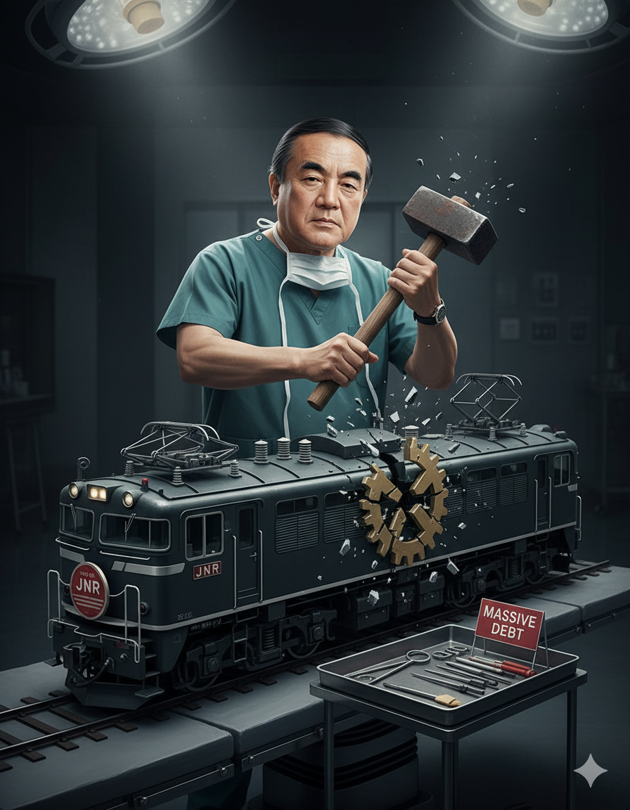
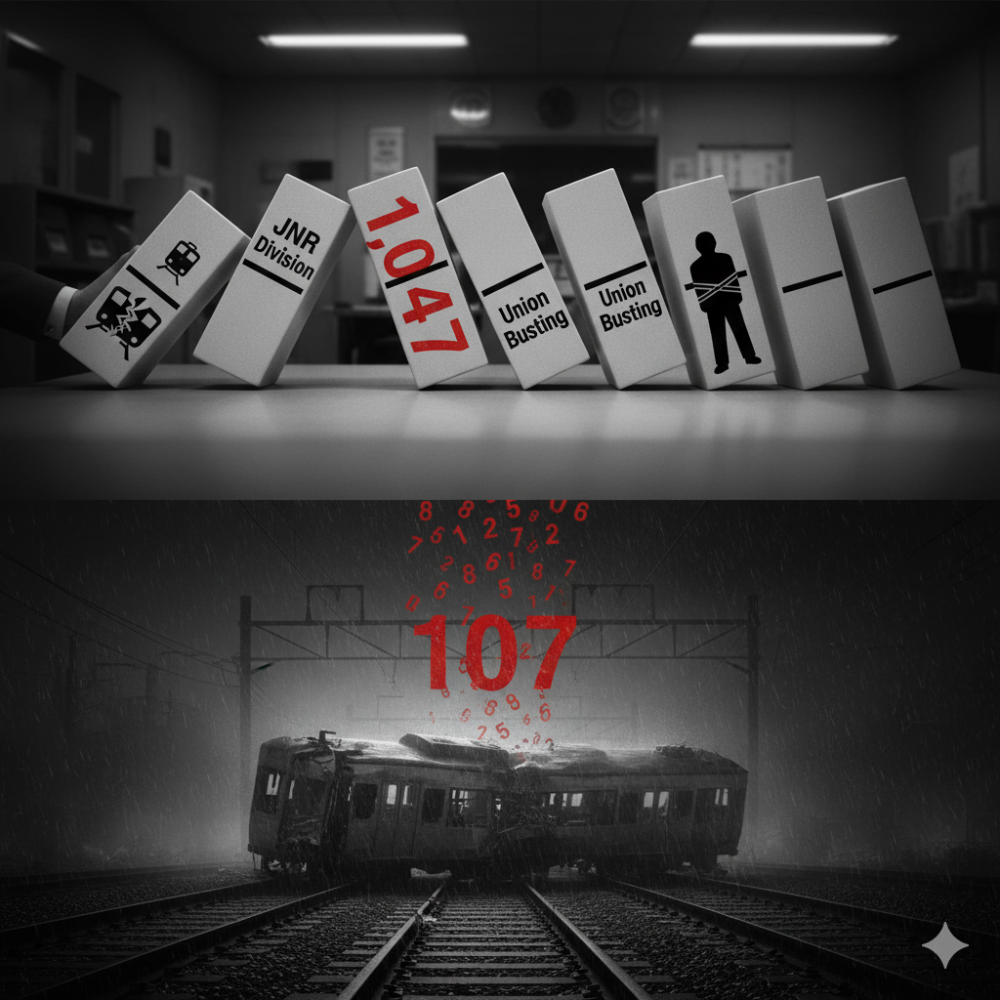
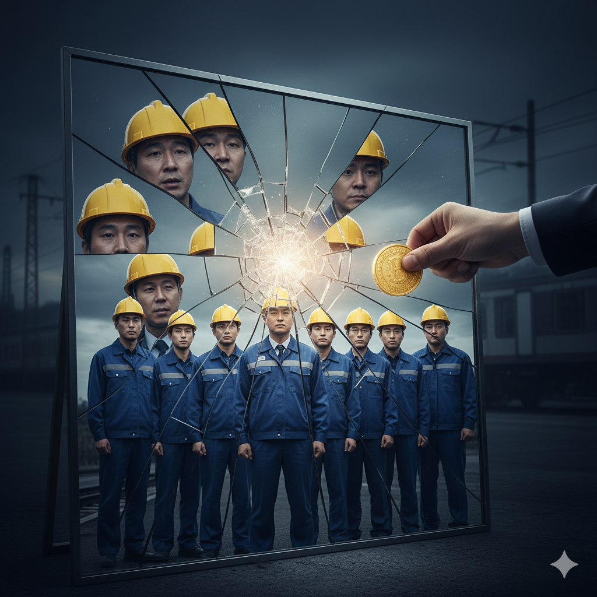
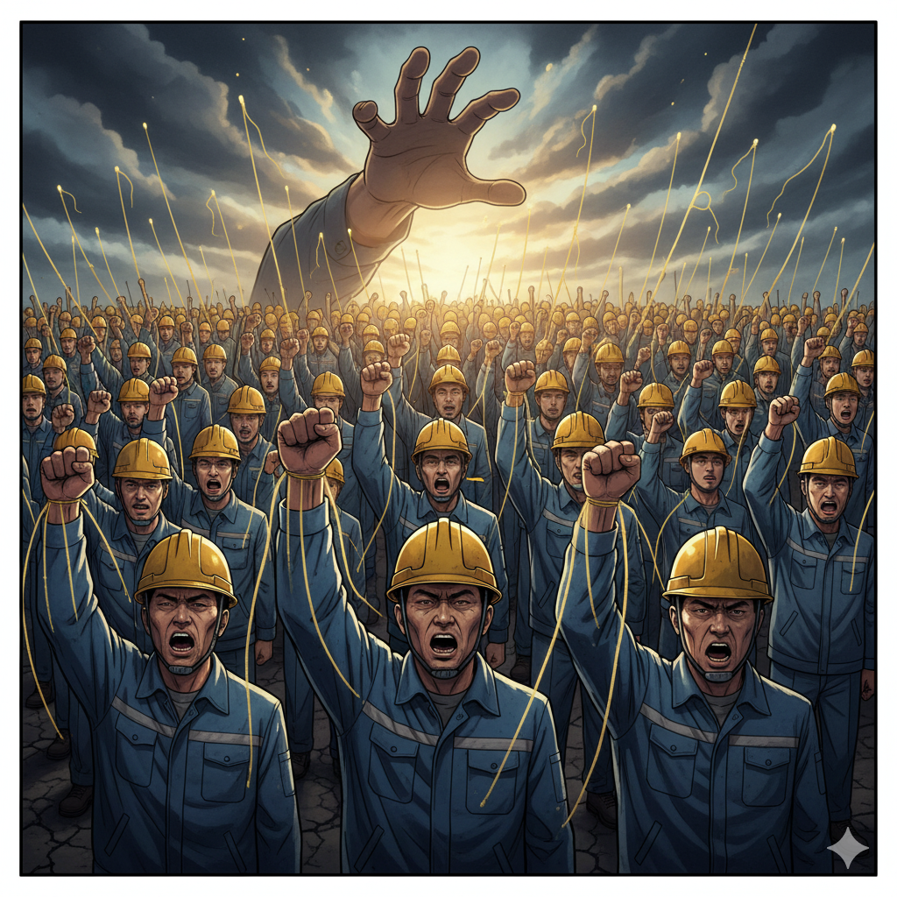
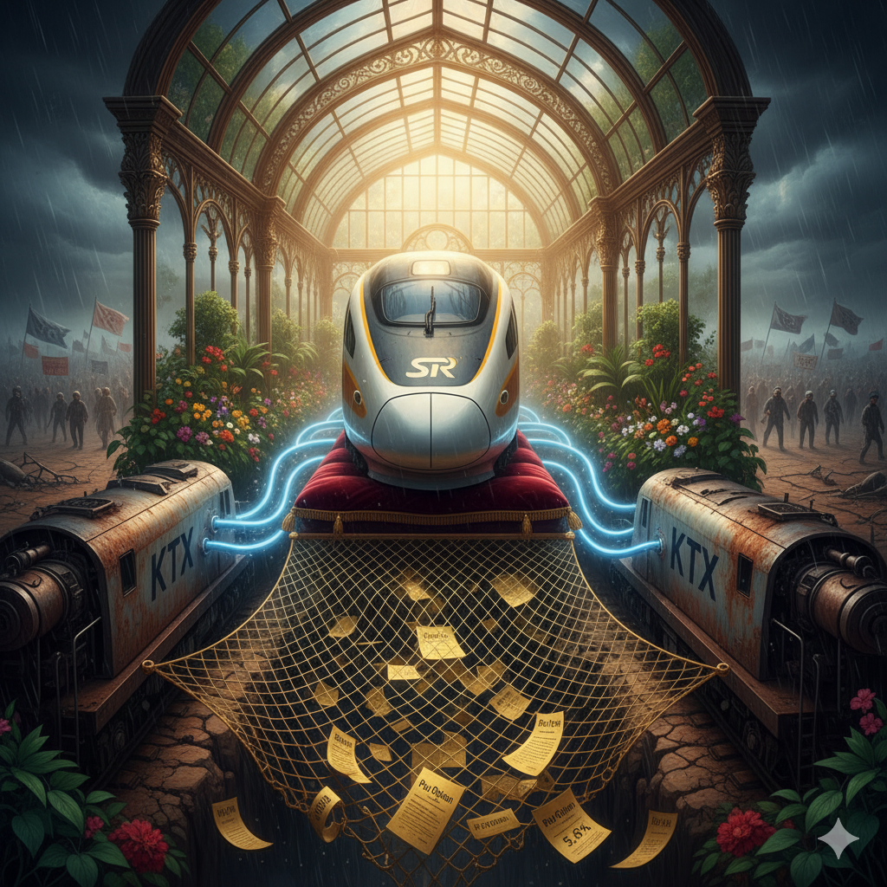
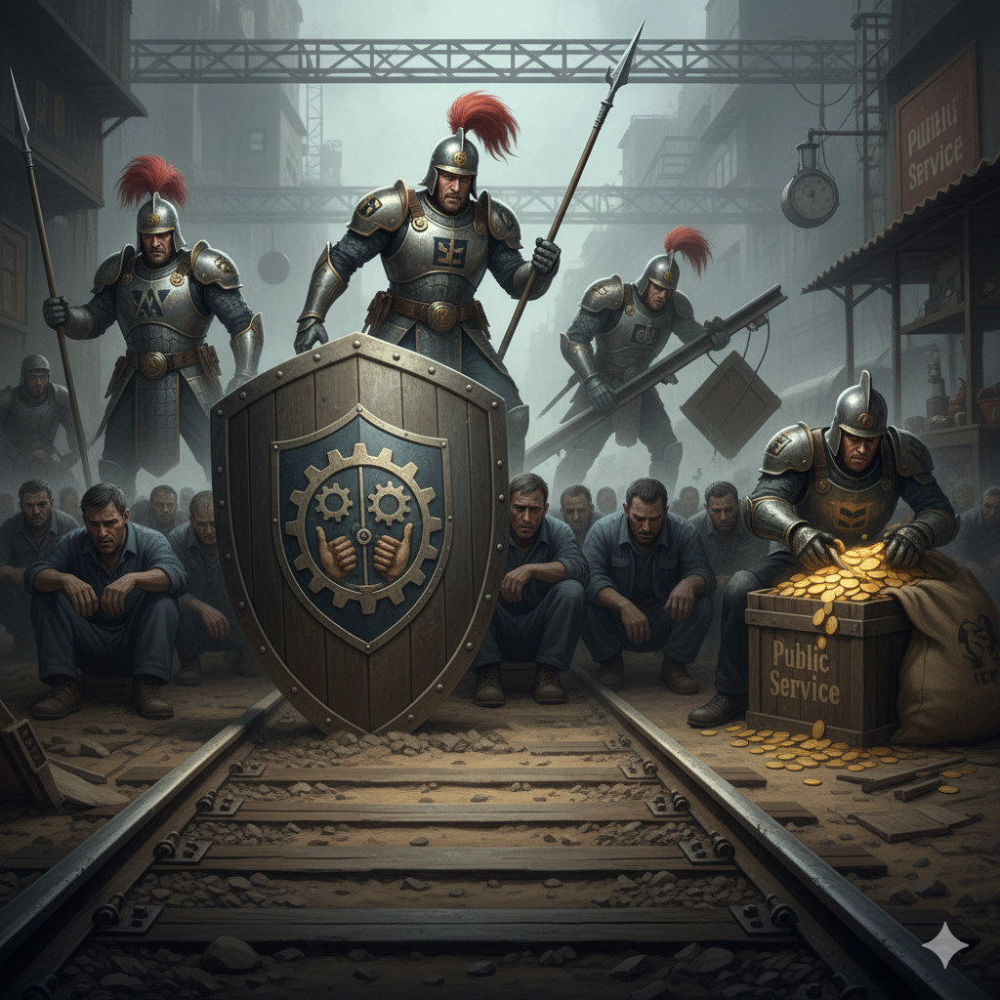

정부와 공공기관 사측이 추진하는 정책들 이면에는 종종 '노동조합 무력화'라는 숨은 의도가 발견됩니다. 철도의 공공성을 지키고 노동자의 권익을 대변하는 단결된 목소리는 민영화나 구조조정을 추진하는 입장에서 가장 큰 걸림돌이기 때문입니다. 물리적 탄압만큼이나 집요하게 구축되는 '보이지 않는 전선'은 연대를 내부로부터 허물어뜨려려 합니다. 성과급·직무급제 도입이나 조직 분할을 통한 갈등 유발 등은 단순한 임금체계 개편을 넘어, 동료를 경쟁자로 만들고 연대를 불신으로 바꾸려는 계산된 전략으로 읽힙니다.
이러한 '보이지 않는 공격'의 실체를 이해하기 위해 일본 국철(Japan National Railways, JNR) 분할 민영화의 역사를 돌아볼 필요가 있습니다. 1987년, 나카소네 정부는 막대한 부채를 이유로 JNR을 6개의 여객철도회사와 1개의 화물철도회사로 분할 민영화했습니다. 표면적인 명분은 '경영 합리화'였지만, 당시 민영화를 주도했던 나카소네 전 총리는 훗날 언론 인터뷰에서 "민영화의 진짜 목적은 국철 노조를 분쇄하기 위한 것이었다"고 공공연히 인정했습니다.
당시 정부와 사측은 '노노갈등'을 유발하는 시나리오를 가동했습니다. 사측에 우호적인 노조를 전면에 내세워 기존 국철노동조합(国鉄労働組合, コクロ) 조합원의 이탈을 유도했고, 신규 회사 채용 과정에서 노조 소속을 이유로 한 광범위한 차별이 자행되었습니다.
그 결과는 참혹했습니다. 분할·민영화 과정에서 약 27만 7천 명의 JNR 인력 중 약 20만 명만 JR로 재고용되는 대규모 인력 재편이 있었습니다. 이 과정에서 노조 차별 논란으로 소송이 이어졌고, 1,047명의 미채용자 문제는 일본 노동운동의 상징적인 사건으로 남았습니다. 일본 국철 분할 민영화는 결과적으로 강력했던 노조를 와해시킨 사례로 기록되었습니다. 이후 JR 각 회사는 수익성에 집중했고, 2005년에는 JR서일본 후쿠치야마선에서 107명의 목숨을 앗아간 탈선 참사가 발생했습니다. 당시 사고 조사를 통해 가혹한 시간 준수 압박 문화 등 안전관리 체계에 대한 구조적 문제점이 지적되기도 했습니다. '분할'과 '민영화'의 칼날이 노동조합을 겨눌 때, 그 피해는 결국 사회 전체의 안전 문제로 이어질 수 있다는 교훈을 남깁니다.
'분열을 통한 통제' 전략은 한국 철도 현장에서도 교묘하게 실행되고 있습니다. 대표적인 무기가 '성과급'과 '직무급'입니다. 사측은 '일 잘하는 사람이 더 많이 받는 공정한 보상체계'라고 홍보하지만, 평가의 기준은 결국 사측이 쥐고 있어 내부 경쟁을 부추기고 단결을 해치는 도구로 악용될 소지가 큽니다.
2016년, 철도노조는 '성과연봉제' 도입 반대를 핵심 쟁점으로 74일간의 장기 파업을 진행했습니다. 이는 해당 제도가 단순한 임금체계 개편이 아니라 노동자를 통제하고 노조를 무력화하려는 시도라는 문제의식에 기반한 투쟁이었습니다. 성과급·직무급제는 노동을 개별화하고, 연대의 가치를 파괴하며, 최종적으로는 노동조합의 교섭력을 무력화시키려는 의도를 가질 수 있습니다.
SR의 10년 연속 무분규 임금협약 타결은 종종 '노사 상생'의 모범 사례로 언급됩니다. 하지만 그 이면을 들여다볼 필요가 있습니다. SR의 무분규는 '투쟁하지 않으면 얻는 것도 없다'는 노동운동의 기본 원리를 역설적으로 증명하는 사례로 볼 수 있습니다.
SR은 태생부터 코레일의 차량·정비·시스템에 의존하는 구조 속에서 안정적인 수익을 보장받아왔습니다. 특히 SR 설립 당시 재무적 투자자(사학연금, 기업은행, 산업은행)들에게는 실적이 부진할 경우 투자 원금에 연 5.6%의 복리 이율을 적용해 경쟁사인 코레일이 주식을 되사주도록 하는 '풋옵션(Put Option)' 계약까지 부여되었습니다. 핵심 업무를 코레일에 의존하며 수익성 높은 노선만 운영하고, 투자 손실 위험마저 코레일에 전가하는 구조였기에 치열한 투쟁 없이도 조직 유지가 가능했던 것입니다.
더욱 중요한 것은, 이러한 '무풍지대' 속에서 노동조합의 본질적인 역할인 '경영에 대한 견제와 감시' 기능이 제대로 작동했는지에 대한 의문입니다. SR의 10년 무분규는 강력한 노동조합이 부재할 때, 자본과 권력이 얼마나 손쉽게 공공의 이익을 사유화할 수 있는지를 보여주는 사례일 수 있습니다. 노동조합의 투쟁은 단순히 임금 인상을 넘어, 경영진의 독단과 전횡을 막고 철도의 공공성과 노동자의 존엄을 지키는 최소한의 방어선입니다.
 목차로 돌아가기